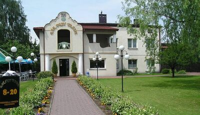

Bar przy Trasie
Zapraszamy!
Zapraszamy!
BAR PRZY TRASIE - to firma rodzinna funkcjonująca w branży gastronomicznej od 30 lat. Specjalizujemy się w tradycyjnej polskiej kuchni, zarówno jeśli chodzi o przepisy dań jak i o metody ich przygotowywania.
Restauracja położona jest przy trasie DK-1 w Kolonii Poczesnej, 10km od Częstochowy w kierunku Katowic. To położnenie decyduje o tym, że naszymi klientami są zarówno zorganizowane grupy turystyczne, kierowcy TIR-ów oraz goście indywidualni. Bliska odległość od Jasnej Góry sprawia, że odwiedzają nas również grupy pielgrzymkowe.
Nasza działalność obejmuje codzienną obsługę klientów, organizację imprez okolicznościowych (komunie, chrzciny, imieniny itp.) oraz catering. Zapewniamy bardzo profesjonalną obsługę, szeroką i urozmaiconą ofertę menu oraz przystępne ceny.
"BAR PRZY TRASIE" - to lokal ustyuowany w zadbanym dużym ogrodzie, posiadający salę na 50 osób oraz zadaszony ogródek letni na 40 osób. Dla najmłodszych klientów przytowaliśmy plac zabaw. Zaletą naszego obiektu jest duża ilość zieleni oraz parking mogący pomieścić jednorazowo kilkanaście TIR-ów.